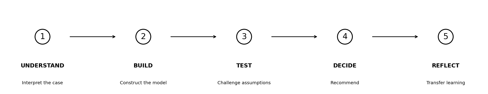

UNDERSTANDBUILDTESTDECIDEREFLECT

Intro video
Insert your existing intro video here using a normal Quarto video embed or iframe. Keep captions/transcript available beneath it.
Learning contract · outcomes-based education
What is this activity about?
This micro-learning activity develops your ability to use spreadsheet technology to support a commercial capital-investment decision in a South African business context. You will work with financial and operational information, build and interrogate a spreadsheet model, compare alternatives and communicate a reasoned recommendation.
The purpose is not simply to learn spreadsheet formulas. The purpose is to develop applied digital, analytical and decision-making competence: using a digital tool appropriately, understanding the assumptions behind the output, and exercising judgement when the evidence is incomplete.
Learning outcomes
On successful completion of this activity, you should be able to:
-
Interpret financial and operational information relevant to a capital-investment decision.
-
Construct a structured spreadsheet model using appropriate formulas, cell references and number formats.
-
Calculate and compare useful generation, annual savings and simple payback across alternative proposals.
-
Use and interpret discounted cash-flow information and sensitivity analysis to evaluate the effect of changing a material assumption.
-
Create an appropriate visualisation that communicates decision-relevant information clearly.
-
Evaluate assumptions and supplier claims using professional scepticism and identify additional evidence required.
-
Formulate and communicate a concise, evidence-based recommendation that recognises commercial trade-offs and uncertainty.
-
Reflect on the strengths and limitations of the model and transfer the modelling approach to another business decision.
What evidence will you produce?
|
Evidence of learning
|
Capability demonstrated
|
|
Structured spreadsheet model
|
Digital, numerical and practical competence
|
|
Correct formulas and references
|
Spreadsheet accuracy and auditability
|
|
Executive comparison chart
|
Visual communication
|
|
Sensitivity analysis
|
Analytical and critical thinking
|
|
≤100-word management recommendation
|
Decision-making and professional communication
|
|
Evidence request concerning Supplier C
|
Professional scepticism
|
|
Guided reflection
|
Reflexive competence and transfer
|
How you will learn
The activity follows one unfolding management problem through five stages: Understand → Build → Test → Decide → Reflect. A short Spreadsheet Essentials bridge supports learners who are new to Excel or Google Sheets.
Foundational competence · KNOW
Understand the business problem, terminology, data and assumptions.
Practical competence · DO
Build the spreadsheet, calculate measures and communicate outputs.
Reflexive competence · ADAPT & JUDGE
Stress-test assumptions, evaluate evidence, recommend and transfer the reasoning.
Formative learning
Use checkpoints and reference values to diagnose errors before moving on.
The case · Monday morning
Cape Manufacturing has a capital-allocation decision to make
Cape Manufacturing is a Western Cape industrial producer. Electricity is a material operating cost, tariffs are expected to rise, and management is considering rooftop solar PV as a way to reduce grid purchases and improve energy resilience.
Three suppliers have submitted proposals. Each looks attractive for a different reason. The Financial Director does not want a sales comparison; she wants a transparent commercial analysis that can be challenged before capital is committed.
You are the Junior Commercial Analyst / Trainee Accountant. You have been asked to turn the proposals into an Excel model, test a key assumption and prepare a concise recommendation.
The question you must answer
Which solar proposal should Cape Manufacturing take forward, and what must management verify before signing a contract?
1 · Build evidence
Translate technical proposal data into comparable financial measures.
2 · Challenge the model
Stress-test an assumption that could change the decision.
3 · Advise management
Make a ≤100-word recommendation supported by evidence and professional scepticism.
Excel orientation · before you begin
Open the workbook and find your way around
-
Open SU_DLA_Solar_Student_Workbook_V5_Dual_Platform.xlsx in Microsoft Excel, or upload it to Google Drive and open it with Google Sheets.
-
Click the Start Here sheet tab. Read A4 and the learning outcomes in A10:A16.
-
Notice the five workbook tabs: Start Here, Case Data, Your Model, Test Assumptions, Recommendation.
-
Excel: save a working copy with your name. Google Sheets: make/save a Google Sheets copy with your name.
You do not need prior Excel experience. The course will tell you which sheet and cell to use at each step.
By the end: one auditable Excel model, one management chart, one sensitivity test and one concise executive recommendation.
South African commercial context
Cape Manufacturing is a fictional Western Cape industrial producer. All monetary values are in South African rand (R). The electricity tariff, escalation rate and other financial parameters are teaching-case assumptions, not forecasts of South African tariffs or investment conditions. Unless stated otherwise, use the figures exactly as provided and do not introduce VAT, tax, financing or feed-in revenue into the model.
Next: understand the business data before touching the model.